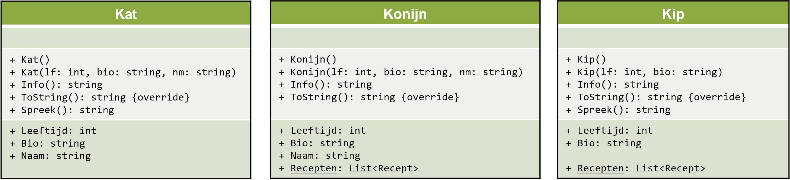
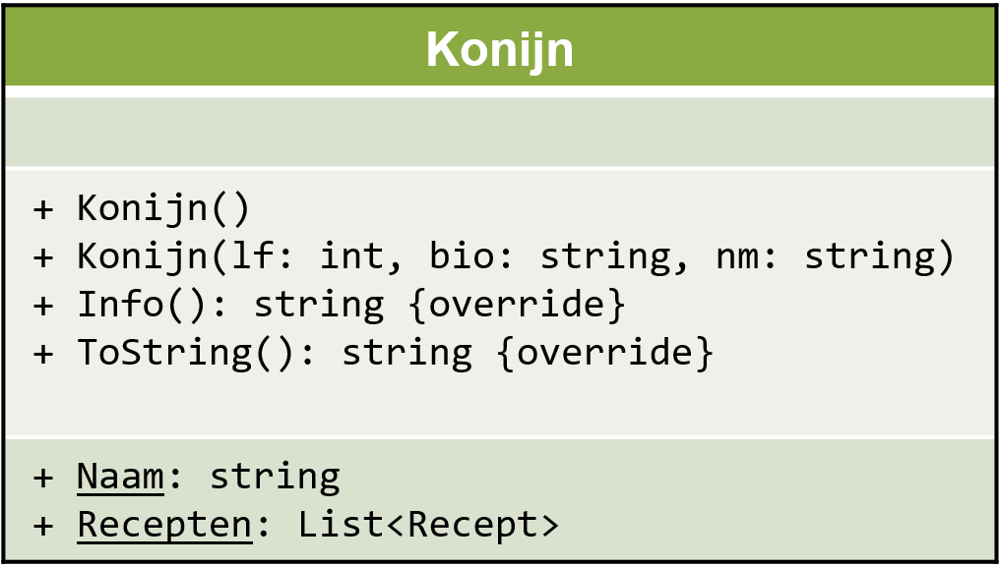

On Youtube
overerving

UML klassediagrammen
Visuele voorstelling
Een UML klassediagram is een visuele voorstelling van de klassen in je programma (naam klasse, variabelen, methodes en properties):

- opmerking: voor dit vak moet je de UML klassen enkel kunnen lezen, niet zelf opstellen (dat komt aan bod in andere vakken)
Escape room voorbeeld
In een escape room spel zou je bijvoorbeeld drie klassen Room, Item en Door kunnen aanmaken:
Ook een statische klasse RandomMessageGenerator voor het genereren van random berichten van een bepaald type Messagetype (enum) kan van pas komen:
DRY, refactoring
Voorbeeld: klassen Kat, Konijn en Kip
We vertrekken van een klasse Kat:
class Kat {
// constructor
public Kat(string nm, int lf) {
Naam = nm;
Leeftijd = lf;
}
// methodes
public string GeefBeschrijving() {
return $"Naam: {Naam}, leeftijd: {Leeftijd}";
}
public void Spreek() {
Console.WriteLine(Leeftijd < 1 ? "miep" : "mauw");
}
// properties
public int Leeftijd { get; set; }
public string Naam { get; set }
}

Vervolgens maken we een klasse Konijn (veronderstel een bestaande klasse Recept):
class Konijn {
// constructor
public Konijn(string nm, int lf) {
Naam = nm;
Leeftijd = lf;
}
// methodes
public string GeefBeschrijving() {
return $"Naam: {Naam}, leeftijd: {Leeftijd}";
}
// konijnen maken geen geluid, dus geen methode Spreek()
// properties
public int Leeftijd { get; set; }
public string Naam { get; set; }
// eetbaar, dus recepten
public static List<Recept> Recepten { get; set; } = new List<Recept>();
}En tenslotte ook een klasse Kip:
class Kip {
// constructor
public Kip(int lf){
Leeftijd = lf;
}
// methodes
public string GeefBeschrijving() {
return $"Dier: kip, leeftijd: {Leeftijd}";
}
public void Spreek() {
Console.WriteLine(Leeftijd < 1 ? "piep" : "kot kot kedei");
}
// properties
public int Leeftijd { get; set; }
// geen Naam - kippen hebben geen naam
// eetbaar, dus recepten
public static List<Recept> Recepten { get; set; } = new List<Recept>();
}DRY principe: don't repeat yourself
Als we de drie klassen naast elkaar bekijken, zijn er nogal wat overeenkomsten:
Herhaling van code is altijd slecht en wijst altijd op een zwakke programma structuur:
- foutgevoeliger (vgl. databank redundantie)
- onoverzichtelijk
- moeilijker te onderhouden
DRY principe: Don’t Repeat Yourself. Er zijn verschillende manieren om herhaling op te lossen:
- een nieuwe methode schrijven
- een nieuwe klasse maken
- gebruik maken van overerving
- ...

Slechte oplossing: één enkele klasse
Een (slechte) oplossing om dubbele code te vermijden is alles in één klasse KipKaNijn samenpersen:
// extra enumeratie nodig!
enum DierType { Kat, Konijn, Kip }
class KipKaNijn {
// meer constructoren!
public KipKaNijn(string ds, int lf) {
Diersoort = ds;
Leeftijd = lf;
}
public KipKaNijn(string ds, int lf, string nm) : this(ds, lf) {
Naam = nm;
}
// dubbelzinnige properties!
public string Naam { get; set; } // niet relevant voor kippen
public int Leeftijd { get; set; }
public static List<Recept> Recepten { get; set; } = new List<Recept>(); // niet relevant voor katten
public DierType Diersoort { get; set; } // extra property nodig voor soort
// methodes worden complexer
public string GeefBeschrijving() {
if (Diersoort == "kip") return $"Dier: kip, leeftijd: {Leeftijd}";
else return $"Naam: {Naam}, leeftijd: {Leeftijd}";
}
public void Spreek() {
switch (Diersoort) {
case "kip":
Console.WriteLine(Leeftijd < 1 ? "piep" : "kot kot kedei"); break;
case "kat":
Console.WriteLine(Leeftijd < 1 ? "miep" : "mauw"); break;
default:
break; // or throw Exception?
}
}
}Er duiken allerlei nieuwe problemen op:
- extra enumeratie(s) nodig
- meer constructoren nodig
- niet alle properties zijn altijd relevant voor elk subtype
- methodes worden complexer
- wat stelt
KipKaNijneigenlijk voor?
Alles in aparte klassen is geen goed idee, alles in één klasse is geen goed idee...
Wat we nodig hebben is gemeenschappelijke code in superklassen, en aparte code in afgeleide subklassen. Dit principe heet overerving.
Overerving
Bekijken we nog eens de drie aparte klassen:
Superklasse Huisdier
We groeperen die gemeenschappelijke delen in een nieuwe superklasse Huisdier:
Implementatie van de superklasse Huisdier:
class Huisdier {
public Huisdier(string nm, int lft) {
Naam = nm;
Leeftijd = lft;
}
// virtual: subklassen mogen dit overschrijven met eigen implementatie
public virtual string GeefBeschrijving() {
return $"Naam: {Naam}, leeftijd: {Leeftijd}";
}
public int Leeftijd { get; set; }
public string Naam { get; set; }
}

Overgeërfde klassen Kat:Huisdier, Kip:Huisdier en Konijn:Huisdier
De implementatie van de subklasse Kat, overgeërfd van Huisdier
class Kat : Huisdier {
public Kat(string nm, int lf) : base(nm, lf) { }
public void Spreek() {
Console.WriteLine(Leeftijd < 1 ? "miep" : "mauw");
}
}
De implementatie van de subklasse Kip, overgeërfd van Huisdier
class Kip : Huisdier {
public Kip(int lf) : base(null, lf) { }
public override string GeefBeschrijving() {
return $"Dier: kip, leeftijd: {Leeftijd}";
}
public void Spreek() {
Console.WriteLine(Leeftijd < 1 ? "piep" : "kot kot kedei");
}
public static List<Recept> Recepten { get; set; } = new List<Recept>();
}De implementatie van de subklasse Konijn, overgeërfd van Huisdier
class Konijn : Huisdier {
public Konijn(string nm, int lf) : base(nm, lf) { }
public static List<Recept> Recepten { get; set; } = new List<Recept>();
}

We hebben nu een superklasse Huisdier met alle gemeenschappelijke kenmerken, en drie overgeërfde klassen die aanvullen/aanpassen waar nodig.
Abstracte klassen
Je zou kunnen argumenteren dat een Huisdier op zichzelf geen betekenis heeft,
maar dat het enkel dient als basisklasse voor Kat, Kip of Konijn.
In dat geval kan je overwegen de klasse als abstract te markeren:
abstract class Huisdier {
...
}
Je moet het eerst overerven om te kunnen gebruiken:
Huisdier h = new Huisdier(); // fout: Huisdier kan niet rechstreeks gebruikt worden
Kat minnie = new Kat(); // ok; afgeleide klasse Kat kan wel gebruikt worden
Konijn flappie = new Konijn(); // ok; afgeleide klasse Konijn kan wel gebruikt worden
- het creëren van een superklasse waar andere klassen van overerven noemt men abstractie
is en as
Maken we een lijst met verschillende huisdieren:
List<Huisdier> mijnHuisdieren = new List<Huisdier>();
mijnHuisdieren.Add(new Kat("minou", 12));
mijnHuisdieren.Add(new Kip(2));
mijnHuisdieren.Add(new Kip(4));
mijnHuisdieren.Add(new Kip(5));
mijnHuisdieren.Add(new Konijn("flappie", 7));
mijnHuisdieren.Add(new Konijn("spluisje", 2));
- de lijst is van het type Huisdier
- het bevat objecten van de subtypes Kat, Kip en Konijn
Het subtype van een object kun je controleren met is, naar een subtype casten kan met as:
foreach (Huisdier dier in mijnHuisdieren) {
Console.WriteLine(dier.GeefBeschrijving());
if (dier is Kat) {
Kat kat = dier as Kat;
Console.WriteLine("het is een kat");
kat.Spreek();
}
if (dier is Konijn) {
Konijn konijn = dier as Konijn;
Console.WriteLine("het is een konijn");
}
if (dier is Kip) {
Kip kip = dier as Kip;
Console.WriteLine("het is een kip");
kip.Spreek();
}
Console.WriteLine("-----------");
}
In plaats van met as kan je ook gewoon casten op de klassieke manier:
foreach (Huisdier dier in mijnHuisdieren) {
Console.WriteLine(dier.GeefBeschrijving());
if (dier is Kat) {
Kat kat = (Kat)dier;
Console.WriteLine("het is een kat");
kat.Spreek();
}
if (dier is Konijn) {
Konijn konijn = (Konijn)dier;
Console.WriteLine("het is een konijn");
}
if (dier is Kip) {
Kip kip = (Kip)dier;
Console.WriteLine("het is een kip");
kip.Spreek();
}
Console.WriteLine("-----------");
}
- gebruik liever
as, dan is het duidelijker dat het over overerving gaat
Polymorfisme
Ter herinnering, er zijn twee implementaties van GeefBeschrijving(): één algemene in de klasse Huisdier en één specifieke in de klasse Kip
Naar de buitenwereld toe is er echter slechts één methode GeefBeschrijving(); de compiler zal automatisch de juiste versie oproepen naargelang de situatie (in dit geval het subtype)
foreach (Huisdier dier in mijnHuisdieren) {
Console.WriteLine(dier.GeefBeschrijving()); // één uitwendige methode, twee inwendige implementaties
...
}
- Dit doet denken aan bv. method overloading: ook daar kan dezelfde methode dankzij meerdere inwendige implementaties gebruikt worden in verschillende versies (in dit geval naargelang de gebruikte parameters)
- Dit concept waarbij eenzelfde uitwendige vorm toch intern verschillende implementaties kan hebben, heet in de programmeerwereld polymorfisme (letterlijk: “meerdere vormen”)
Klassen hiërarchie
Je kan overerving verder doordrijven en ook sub-subclasses maken:

De volledige boomstructuur noemt men de klassen hiërarchie.
Er zijn meerdere hiërarchieën te bedenken. Deze kan bijvoorbeeld ook:

De mogelijkheden zijn eindeloos; het ontwerp van de klassen hiërarchie is één van de belangrijkste taken van software engineering (samen met keuzes over properties, methoden, static of non-static, enums…). Over het algemeen geldt: hoe groter het project, hoe complexer de structuur.
Welke keuzes je uiteindelijk maakt is kwestie van persoonlijke stijl en een kunst, maar over het algemeen geldt: te weinig structuur is niet goed, en teveel ook niet; het optimum ligt ergens “in het midden”. Aan jou om door ervaring je eigen stijl te ontwikkelen.